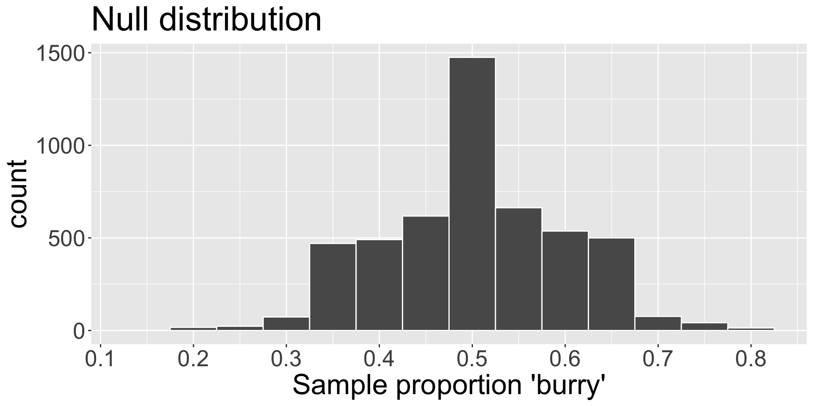
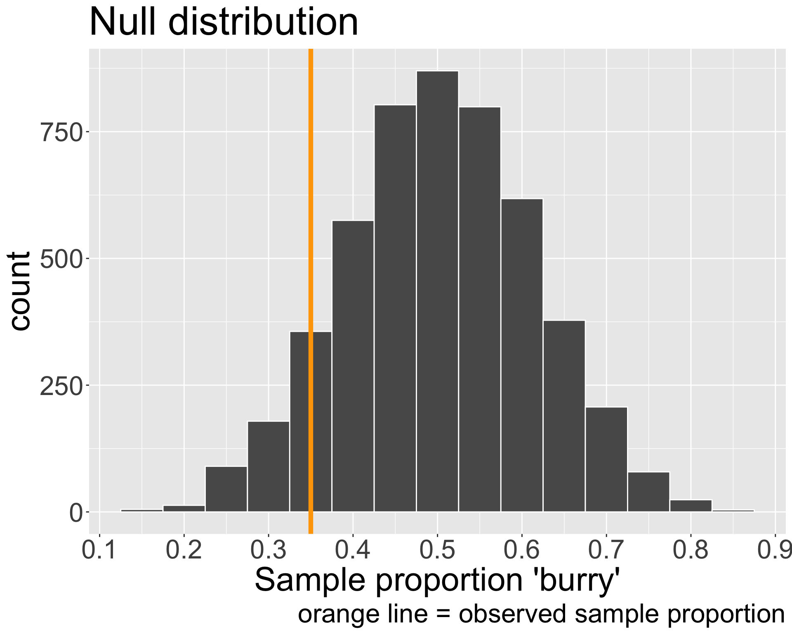
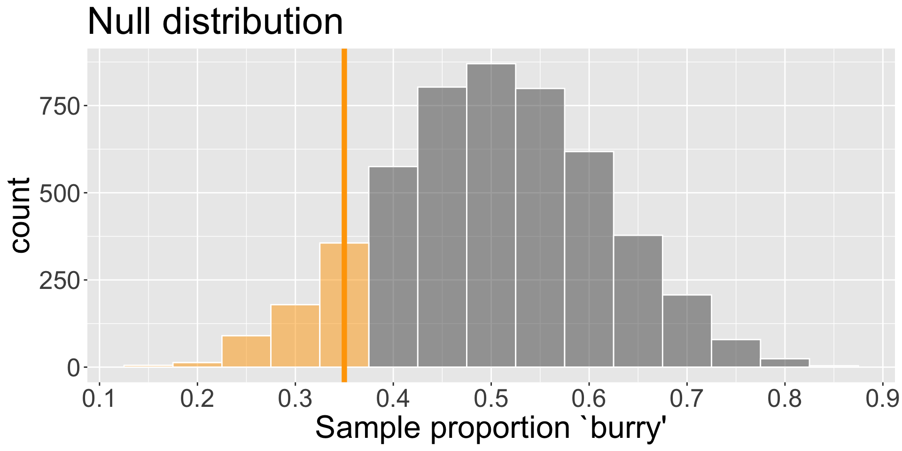
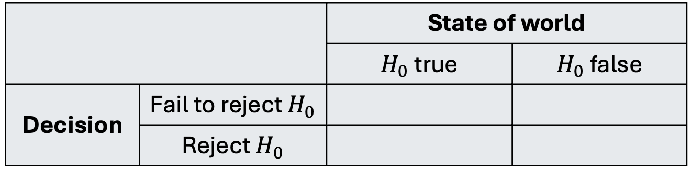
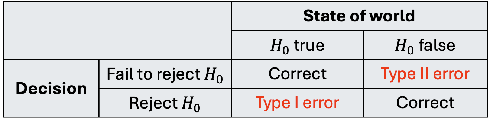

2025-10-16
We are now entering into second branch of inference-related tasks: testing.
We have some “claim”/question about the target population, and we use sampled data to provide evidence for or against the claim
We will use the hypothesis testing framework to formalize the process of making decisions about research claims.
Because the claim is about target population, we will almost always formulate claims in terms of population parameters
Then we use sampled data to provide the evidence for/against
Four stages (we will step through each one):
A hypothesis test is a statistical technique used to evaluate competing claims using data
We define hypotheses to translate our research question/claim into statistical notation
We always define two hypotheses in context: a null hypothesis and an alternative hypothesis
Null hypothesis \(H_{0}\): hypothesis that represents “business as usual”/status quo/nothing unusual or noteworthy
Alternative hypothesis \(H_{A}\): claim the researchers want to demonstrate
It will not always be obvious what the hypotheses should be, but you will develop intuition for this over time!
For each of the following, determine whether it represents a null hypothesis claim or an alternative hypothesis claim:
King cheetahs on average run the same speed as standard spotted cheetahs.
For a particular student, the probability of correctly answer a 5-option multiple choice test is larger than 0.2 (i.e. better than guessing)
The probability of getting in a car accident is the same if using a cell phone then if not using a cell phone.
The number of hours that grade-school children spend doing homework predicts their future success on standardized tests.
For each of the following, determine whether it represents a null hypothesis claim or an alternative hypothesis claim:
King cheetahs on average run the same speed as standard spotted cheetahs.
For a particular student, the probability of correctly answer a 5-option multiple choice test is larger than 0.2 (i.e. better than guessing)
The probability of getting in a car accident is the same if using a cell phone then if not using a cell phone.
The number of hours that grade-school children spend doing homework predicts their future success on standardized tests.
Write out the null and alternative hypotheses in words and also in statistical notation for the following situations:
New York is known as “the city that never sleeps’’. A random sample of 25 New Yorkers were asked how much they sleep they get per night. Do these data providing convincing evidence that New Yorkers on average sleep less than 8 hours per night?
A study suggests that 25% of 25 year-olds have gotten married. You believe that this is incorrect and decide to conduct your own analysis.
New York is known as “the city that never sleeps’’. A random sample of 25 New Yorkers were asked how much they sleep they get per night. Does these data providing convincing evidence that New Yorkers on average sleep less than 8 hours per night?
Words
Notation: let \(\mu\) be the average hours of sleep of New Yorkers
A study suggests that 25% of 25 year-olds in the US have gotten married. You believe that this is incorrect and decide to conduct your own analysis.
Words
Notation: let \(p\) be the proportion of 25 year-olds in the US who are married
Research question: do the minority of Middlebury students pronounce the college’s name as Middle-“burry”?
Try to write down our null and alternative hypotheses in statistical notation! This includes defining parameters!
Our sample is the convenience sample I took of our class: 1, 0, 0, 0, 1, 1, 1, 0, 0, 0, 1, 1, 0, 1, 0, 0, 1, 0, 1, 0, 0, 1, 1, 0, 0, 0, 0, where 1 = “burry” and 0 = “berry”.
Point estimate: \(\hat{p}_{obs} = 0.407\)
Even if this was SRS and not convenience, are we prepared to answer our research question based on this evidence?
NO! Due to variability, we should ask: do the data provide convincing evidence that the minority of Middlebury pronounce as “burry”?
“Convincing evidence” for us means that it would be “highly unlikely” to observe the data we did (or data even more extreme) if \(H_{0}\) were true!
We calculate a p-value: the probability of observing data as or more extreme than we did, assuming \(H_{0}\) true
Note: p in “p-value” is not the same as parameter \(p\)!
This is a conditional probability: we condition on \(H_{0}\) true
“Highly unlikely” is vague and needs to be defined by the researcher, ideally before seeing data.
If we want to provide a yes/no answer to the research question, we need some threshold to compare the p-value to. This is called a significance level \(\alpha\)
Common choices are \(\alpha = 0.05\), \(\alpha = 0.01\) (more on this later)!
For our example, we will choose \(\alpha = 0.05\)
How to obtain this probability?
Need access to a distribution that corresponds to a world where \(H_{0}\) is true (i.e. the null distribution)
Option 1: if we have assumptions about how our data behave, we can obtain this distribution using theory/math (next week)
Option 2: if we don’t want to make assumptions, why not simulate?
This is the step that requires the most “work”, and what exactly you do will depend on the the type of data and the research question/claim you have
We have to simulate our data under the assumption that \(H_{0}\) is true (recall \(H_0\): \(p = 0.5\))
Imagine a big bag filled with many slips of blue and orange slips of paper
Orange = “burry”
Blue = “berry”
To simulate under \(H_{0}\), we replicate our original sample, this time sampling from this “null world” bag of paper slips
Repeatedly take samples from this null distribution using original sample size \(n =\) 27
For each sample, calculate the simulated proportion of orange slips
Live code?
What do you think line 9 prob = c(0.5, 0.5) is doing?
We can visualize the distribution of \(\hat{p}\) assuming \(H_{0}\) true:

This is called the null distribution of the sample statistic, which is the distribution of the statistic \(\hat{p}\) , assuming \(H_{0}\) is true
Where is this null distribution of \(\hat{p}\) centered? Why does that “make sense”?
Let’s return to our original goal of Step 3! We need to find the p-value: the probability of observing data as or more extreme as ours, assuming \(H_{0}\) were true.
Our observed point estimate was \(\hat{p}_{obs} =\) 0.407
\(H_{0}\): \(p = 0.5\) and \(H_{A}\): \(p < 0.5\)
What does “as or more extreme” mean in this context?
How can we use the null distribution to obtain this probability?

We can directly estimate the p-value using our null distribution and our observed \(\hat{p}\)!

Interpret the p-value 0.215 in context
Assuming \(H_{0}\) true, the probability of observing a sample proportion of students saying “burry” as or more extreme as 0.4074074 is approximately 0.215
Make a decision about research claim/question by comparing p-value to significance level \(\alpha\)
If p-value \(< \alpha\), we reject \(H_{0}\) (it was highly unlikely to observe our data given \(H_{0}\) and our selected threshold)
If p-value \(\geq \alpha\), we fail to reject \(H_{0}\) (not have enough evidence against the null)
Note: we never “accept \(H_{A}\)”!
Since our p-value is greater than \(\alpha = 0.05\), we fail to reject \(H_{0}\). The data do not provide sufficient evidence to suggest that the minority of Middlebury pronounce as “burry”.
Four steps for hypothesis test:
In Step 4, we make a decision but it could be wrong! (Unfortunately, we will never know)
We always fall into one of the following four scenarios:

Identify which cells are good scenarios, and which are bad

What kind of error could we have made in our example?
It is important to weight the consequences of making each type of error!
What are the similarities/differences between the bootstrap distribution of a sample statistic and the simulated null distribution?
Do you understand what a p-value represents, and how we obtain it from the null distribution?
What role does \(\alpha\) play? Why is it important to set \(\alpha\) early on?